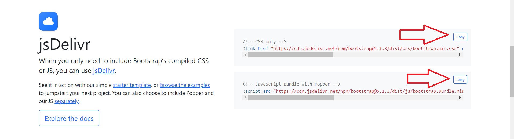

WELCOME
Hello, I am Said Kaynarca, I am a 1st year student at Mersin University, Department of Information Systems and Technologies, numbered 21430070044.
On this site, I will introduce you to a site where you can add tables and choose seats that I made using bootstrap and js library.
BOOTSTRAP NOTIFICATION
Bootstrap is a huge collection of useful, reusable pieces of code written in HTML, CSS, and JavaScript.
It is also a framework that enables developers and designers to quickly create fully responsive websites.
The Bootstrap web application development toolkit was created by former Twitter employees Mark Otto and Jacob Thornton.
With Bootstrap, developers can focus on development work without worrying about design while developing web applications.
and it can get a good looking website up and running quickly.
Conversely, it provides web designers with a solid foundation for creating interesting Bootstrap themes.
The parts with brown background color are for installation
The parts with purple background color are for example and illustration
The parts with yellow background color for you to examine the codes more easily
SETUP
How to Use Bootstrap?
Because there are ready-made codes in Bootstrap, you can make designs in the form of copy and paste.
However, there are some processes that you need to fulfill in order to design.
Since it is an up-to-date design tool, your page must be HTML5.
In order to make your HTML5 page ready for use, you must add the jquery script and CSS file to your web page.
By doing these operations, you determine the reference address of all designs on your page as getbootstrap.com.
After entering the site, click on the Getting Started button in the menu at the top of the home page.
You can start designing with Bootstrap.
-
After copying and pasting the codes waiting for you in the Javascript, CSS and Componet fields, you can handle your transactions.
Bootstrap library home page
You can access at.
-
When we come to this site, we can use two methods.
First of all, after entering the site, pressing the download button that comes before us and downloading all the files,
We can move it to our code file. This page welcomes you when the site opens

When the site opens, this page greets you, and when we press the download button, the page it redirects is like this;

After the second download button we click here, the file with the rar extension will start to download automatically.
After this file is downloaded, you can download the library extensions that are suitable for you in your library.
It is enough to transfer the files to the code directory you have created by choosing yourself.
-
If you do not want to download files, you can use the second method, this is simpler.
When you come to the Bootstrap site, you will see the jsDelivr section when you go down to the bottom of the page.
Here are the css and javascript links ready. Press the copy button and copy it in our code section.
Just write it inside the < head > tag.

Your codes are integrated into the bootstrap library, after that you can start writing code.
Purpose of the site
In this site, I will tell you how to add table data using bootstrap and js library.
In addition, I will tell you about choosing a movie, choosing a seat, and the price change according to the movie we choose.
Here we enter the personal information of the audience who will watch the movie.
From here, we choose the movie and the seats that the audience will watch.
Table Making
We write the table construction with these codes. To make your job easier, I wrote the css part inside the stlye tag.
First you will see the codes, then you will see the working version.
I put a space between the "<" symbol and the tags of all the codes so that it doesn't work.
< html lang="tr">
< head>
< style>
#sayfa{
width: 500px;
margin:auto;
padding:20px;
}
label{
display:block;
margin-top:5px;
}
input{
width: 200px;
height: 25px;
font-size:1.2em;
}
button{
border:none;
display:block;
margin-top:5px;
width: 204px;
height: 50px;
text-align: center;
font-size:1.2em;
}
table{
background: #0984e3;
margin:5px;
width: 100%;
color:#fff;
}
td,th{
border:1px solid white;
border-spacing: 0px;
margin: 0px;
}
< /head>
< body>
< div id="sayfa">
< label>Ad: < input type="text" id="ad">
< label>Soyad: < input type="text" id="soyad">
< label>Yaş: < input type="number" id="yas">
< button id="ekle">Tabloya Ekle
< table id="liste">
< tr>
< th>Ad
< th>Soyad
< th>Yaş
< /tr>
< /table>
< /div>
Seat Selection and Price Learning
This is for us to add a menu that remains fixed at the bottom and top of the page. This will stay in place while other navbars slide.
The most important feature is that it is stable.
The structure of this one is the same as the first one. The only difference is that it should be on the top of the main dive.
Just give navbar navbar-default navbar-fixed-bottom so that navbar navbar-default navbar-fixed-top is at the bottom.
We can add as many buttons as we want. You will see the codes that I wrote for this navbar in the yellow section below.
I have integrated the code below, you can see it working.
I put a space between the "<" symbol and the tags of all the codes so that it doesn't work.
< !DOCTYPE html>
< html lang="en">
< head>
< meta charset="UTF-8">
< meta http-equiv="X-UA-Compatible" content="IE=edge">
< meta name="viewport" content="width=device-width, initial-scale=1.0">
< link rel="stylesheet" href="style.css">
< title>Sinema Bilet Rezervasyon< /title>
< /head>
< body>
< div class="container">
< div class="screen">< /div>
< div class="row">
< div class="seat">< /div>
< div class="seat">< /div>
< div class="seat reserved">< /div>
< div class="seat reserved">< /div>
< div class="seat">< /div>
< div class="seat">< /div>
< div class="seat">< /div>
< div class="seat">< /div>
< /div>
< div class="row">
< div class="seat">< /div>
< div class="seat">< /div>
< div class="seat">< /div>
< div class="seat">< /div>
< div class="seat reserved">< /div>
< div class="seat reserved">< /div>
< div class="seat">< /div>
< div class="seat">< /div>
< /div>
< div class="row">
< div class="seat">< /div>
< div class="seat">< /div>
< div class="seat">< /div>
< div class="seat">< /div>
< div class="seat">< /div>
< div class="seat">< /div>
< div class="seat">< /div>
< div class="seat">< /div>
< /div>
< div class="row">
< div class="seat">< /div>
< div class="seat">< /div>
< div class="seat">< /div>
< div class="seat">< /div>
< div class="seat">< /div>
< div class="seat">< /div>
< div class="seat">< /div>
< div class="seat">< /div>
< /div>
< div class="row">
< div class="seat">< /div>
< div class="seat">< /div>
< div class="seat">< /div>
< div class="seat">< /div>
< div class="seat">< /div>
< div class="seat">< /div>
< div class="seat">< /div>
< div class="seat">< /div>
< /div>
< /div>
< div class="movie-list">
< select id="movie">
< option disabled>Film Seçiniz< /option>
< option value="20">movie 1< /option>
< option value="22">movie 2< /option>
< option value="25">movie 3< /option>
< /select>
< /div>
< ul class="info">
< li>
< div class="seat selected">< /div>
< small>Seçili< /small>
< /li>
< li>
< div class="seat">< /div>
< small>Boş< /small>
< /li>
< li>
< div class="seat reserved">< /div>
< small>Dolu< /small>
< /li>
< /ul>
< p class="text">
< span id="count">3< /span> adet koltuk için hesaplanan ücret < span id="amount">60< /span> TL.
< /p>
< script src="script.js">
< /body>
< /html>
Final Statement
Thus, we explained the talo making, seat selection, price learning part and showed you how they look.
I hope what we have told you will be useful for you. If you want to reach all the codes, you can visit my github profile again.
Thank you for your interest, I will leave a link.
My GitHub profile